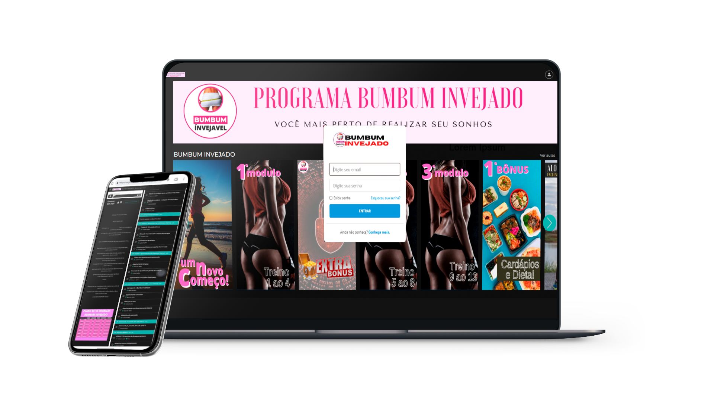

Asegúrese de que el sonido esté encendido.
Asegúrese de que el sonido esté encendido.


.webp)
Programa completo de aumento de glúteos de 12 semanas.
Cronograma completo em vídeos mais alimentação ao longo de 12 semanas, com receitas deliciosas para aumento do bumbum e perda de peso, incluindo dicas valiosas para um estilo de vida saudável e prazeroso. (Valor u$ 97)



¡¡Demasiado feliiiz!! Manu, siempre he ido al gimnasio y nunca he tenido resultados, me alegro de haber aprendido sobre los entrenamientos, muchas graciasüòç
Para m√≠, esta historia del m√©todo para ganar trasero siempre ha sido una mierda, más la nuestra... Si hubiera sabido esto antes, habr√≠a tenido el cuerpo de un adolescente mucho más tiempo üòÇ
¬°Estoy en todo este negocio! No sab√≠a que realmente iba a funcionar, pero decid√≠ intentarlo porque no pod√≠a soportarlo más y quer√≠a que mi trasero fuera redondo y alegre. Gan√©: ¡¡otros 3 cm de trasero en la segunda semana!! üôÄ
Me encantan mis resultados en poco tiempo, las t√©cnicas y el nuevo estilo de vida que estoy siguiendo!! mi novio no deja de felicitarme üòÇ ¬°Gracias por el m√©todo!